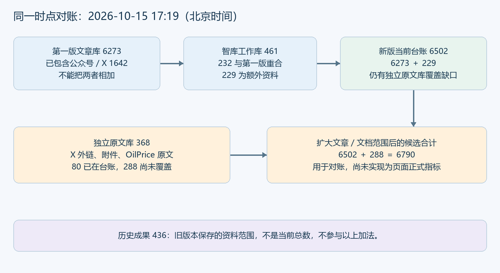
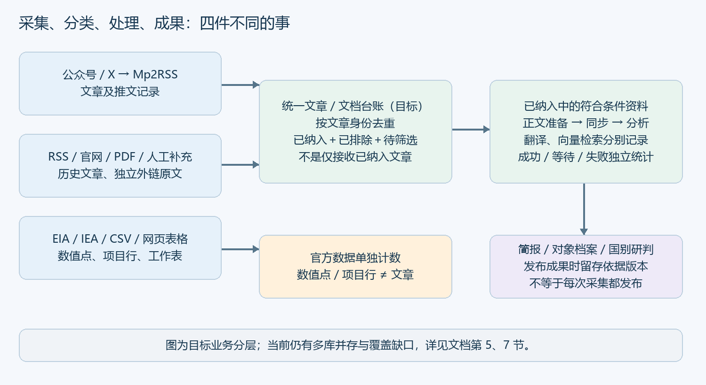

全系统采集流程与数字统计口径核对
用户核对版 · 2026年10月15日 · 主基准17:19（北京时间）
先统一“在数什么、数哪些、哪个时间”，再统一页面。当前版本仍有独立原文库覆盖缺口，本报告将其明确列出。
1. 先看结论：不是你理解错了，是页面混用了统计口径
本次核查只读访问线上数据库，未修改原始文章、分类状态、生产代码或研究成果。数据库主对账采用同一个可重复读事务，基准时刻为 2026-10-15 17:19:00（北京时间）。页面截图是此前时点，不能直接拿不同时刻的数字相减判断丢失。
数字不一致有四类原因同时存在：①业务对象不同，如文章、向量片段、统计点；②覆盖来源不同，如旧文章库、公众号／X、智库工作库；③时间不同，如当前台账与历史成果；④本地新功能尚未发布，线上仍展示旧标签与旧接口。
需要纠正此前“已经覆盖全部采集文章”的表述：新版当前台账目前只合并旧文章库、Mp2RSS 文章及智库工作库，尚未直接覆盖全部独立外链原文。不是单纯刷新页面就能统一。
统一的目标是同名指标在同一范围、同一时点能对账，而不是让所有数字都变成同一个数。文章总数、已向量化文章数、片段数、订阅数本来就应不同。
2. 一张图看懂第一版与新版为什么不同

3. 四张截图逐一解释
| 截图／指标 |
截图值 |
实际含义与计算方法 |
处理建议 |
| 第一版首页：文章总数 |
6254 |
public.articles 表记录数；同一时点核查为6273。公众号／X已写入该表，所以不是额外新增的一组总数。 |
统一页面主指标改为统一台账文章／文档总数；旧库数量只保留在范围说明。 |
| 第一版首页：已向量化 |
867 |
articles.vectorized=true 的文章数；是检索处理状态，不是分类通过数。 |
改为“已完成向量索引的文章”，与分类统计分区。 |
| 第一版首页：来源渠道 |
105 |
public.sources 全部登记行数，含旧微信、当前Mp2RSS、RSS及归档RSS；不是105个当前活跃账号。 |
标注“来源登记记录”；另给活跃订阅账号数。 |
| 第一版首页：知识片段 |
384192 |
public.article_chunks 行数。一篇文章拆成多段后分别建索引，不能与文章数相加。 |
放入检索索引概况，不作为采集文章数量。 |
| 公众号／X：订阅账号 |
50 |
当前40个公众号＋10个X账号。统计对象是账号。 |
保留，明确当前在订阅的账号。 |
| 公众号／X：Mp2RSS收录文章 |
1633 |
该渠道采集到的记录，包含三种分类状态；核查时已增至1642。 |
改为“公众号／X文章总数”，按统一文章身份去重。 |
| 公众号／X：已纳入智库 |
209 |
旧接口实际上要求：accepted＋正文完整＋工作库URL和内容哈希同步成功。它统计同步完成，不是单纯分类已纳入。 |
改为“已同步／符合同步条件”；另独立显示分类已纳入。 |
| 历史成果：269／167／0／436 |
旧版本固定值 |
当时保存436篇：已纳入269、待筛选167、已排除0。旧链路未把采集端排除资料完整纳入。不是本轮采集量，也不是简报实际引用436篇。 |
从主统计区移除，收进回放版本详情；保留追溯。 |
| 新版台账：6481／1682／1563／3236 |
此前核查值 |
旧文章库＋Mp2RSS＋工作库的URL并集，Mp2RSS重复记录合并。当前同口径已变为6502／1684／1566／3252。 |
保留为过渡台账；补齐独立外链原文，才能使用完整覆盖的名称。 |
| 新版同步进度：207／207 |
此前核查值 |
该渠道中符合条件的207篇均同步完成；当前为209／209。它与分类状态并列，而不是第四种分类。 |
保留独立进度，并显示缺正文、待同步、失败。 |
4. 所有渠道是怎样进入系统的

| 入口 |
先保存在哪里／怎么处理 |
调度与统计注意点 |
| 历史微信与旧RSS |
public.articles、public.sources；正文获取后可分类、分段和向量化。 |
历史存量仍在，不能因改接Mp2RSS就从总数中丢掉。旧微信来源数与现有账号数不能直接相加当作独立媒体数。 |
| 公众号与X：Mp2RSS |
mp2rss.items保留采集记录、正文状态、分类；同时关联public.articles。accepted且正文完整的资料才新投递到工作库。 |
采集计划约每30分钟；执行器检查队列与实际采集间隔不是一回事。已有工作库文章可以后续重分类。 |
| X外链、PDF附件、图片 |
链接发现进入evidence_links；网页／附件原文进入evidence_documents；图片还有独立识别状态。 |
外链、图片、原推文不是同一单位。图片及未抓到正文的URL线索不应直接算成独立文章。 |
| OilPrice RSS |
两条feed进入与X外链共用的证据采集链路；已公开、清洗成功且accepted的原文再投递工作库。 |
独立定时器；核查时为约30分钟周期。当前台账未完整覆盖此库中的排除与待判断原文。 |
| 智库RSS、官网、PDF、官方列表 |
智库采集脚本写入工作库资料；不是所有资料都会回写public.articles。 |
总调度代码为每6小时巡检；本轮无新增很正常。页面有采集窗口，窗口不等于完整覆盖所有外部文章。 |
| EIA等统计数据 |
API／CSV／表格输入统计序列；部分新闻另外形成文章记录。 |
线上EIA独立日任务已存在；定时检查不等于每天都新增一个统计期。数值点单独统计。 |
| IEA工作簿 |
授权工作簿保存指标行、项目／阶段登记与版本；资讯可另走Mp2RSS。 |
工作簿检查周期与资讯采集周期不同；页面代码说明每7天检查，不能与30分钟资讯混同。 |
| 人工补充、文件上传 |
上传／文本先成草稿，确认后进入资料及事件链路。 |
草稿不等于已发布事件；有来源链接时需要跨入口去重，无链接时保留独立文件身份。 |
| 旧后台网页表格抓取 |
scrape_sources配置的任务写入scraped_data。 |
每分钟检查配置的cron；输出是表格行／抓取批次，并非自动增加同等数量的文章。 |
5. 同一时点的完整对账结果
基准：2026-10-15 17:19:00（北京时间）。以下主表来自同一个数据库只读事务；不是把几次页面截图拼起来。
集合关系：旧文章库6273已包含Mp2RSS的1642；智库工作库461中有232与旧文章库重合，只增加229。所以当前新版台账为6273＋461－232＝6502。
旧库的6273＝已纳入1604＋已排除1566＋待筛选3103；在当前台账中，额外229篇对应净增加80篇纳入和149篇待筛选。
独立原文库共368篇，其中80篇已被当前台账覆盖，另288篇未覆盖：已纳入2、已排除34、待筛选252。只把未覆盖原文补入，候选覆盖范围为6502＋288＝6790篇文章／文档。6790是本次审计推导的扩围数量，不是已上线指标；最终还需确认独立附件计数政策及同文不同URL规则。
| 范围 |
文章／文档总数 |
已纳入 |
已排除 |
待筛选 |
| 第一版文章库 |
6273 |
1604 |
1566 |
3103 |
| 其中：公众号／X（不可重复相加） |
1642 |
209 |
242 |
1191 |
| 当前新版台账（三库去重） |
6502 |
1684 |
1566 |
3252 |
| 独立原文库尚未覆盖部分 |
288 |
2 |
34 |
252 |
| 候选扩围合计（保持现有结果，只补未覆盖部分） |
6790 |
1686 |
1600 |
3504 |
| 旧历史成果版本（不参与当前加法） |
436 |
269 |
0 |
167 |
6. 其他数字应该怎样读
| 指标 |
统计单位与公式／范围 |
不能据此推断什么 |
| 正文缺失 |
第一版首页接口仅检查content IS NULL；核查1394篇。 |
不等于正文不完整总数；空字符串、抓取失败、部分正文需另外区分。 |
| 867已向量化／384192片段 |
867篇文章vectorized标志为true；片段表关联文章也是867，片段384192条。另次只读检查全部有embedding，文章ID＋片段序号未见重复。 |
不是384192篇文章，也不是行业分类结果；平均约443片段／篇较高，是否切分过细需单独抽检，不能仅凭总数判定重复。 |
| 国内／外网六领域占比 |
第一版图表只统计accepted且主领域非空的文章，再按来源is_overseas划分、归并行业别名。基准国内1099、外网505，共1604。 |
不是6273篇全部文章的比例；来源国别标记不等于文章里提到的国家。 |
| 105来源登记记录 |
旧微信44＋Mp2RSS公众号40＋X10＋RSS5＋归档RSS6。 |
不是105个独立活跃渠道；旧微信与新订阅可能关联同一账号。 |
| 50订阅账号 |
当前40公众号＋10 X，属于特定接入平台的活跃订阅范围。 |
不包含全部官网、官方统计机构或旧RSS登记。 |
| 智库已登记渠道 |
工作库sources表；本次82条。历史页面79及25个RSS／官方渠道是另一时点／筛法。 |
不能与public.sources的105相加；其中包含数据来源、历史记录和暂无文章的渠道。 |
| 同步完成／符合条件 |
公众号／X本次209／209；分类accepted＋正文complete为分母，匹配URL＋内容哈希同步为分子。 |
不等于向量完成、研判完成或成果发布。 |
| 自动结构化完成／等待／重试 |
auto-extract按满足处理条件的工作库文章统计，检查正文版本和处理版本。手工记录等可能不在分母。 |
不是全库采集量，不能直接与台账总数相减当作遗漏。 |
| 翻译完成 |
中文文章或译文版本与正文版本一致的数量，旧订阅接口又限定在同步成功的符合条件资料中。 |
不是全库外文文章数，也不保证结构化已完成。 |
| 新增／更新／重复／失败 |
一轮采集任务的操作结果。新增是首次记录，更新是既有内容变化，重复是内容未变。 |
每轮重复数不能累计成独立文章总数；失败也不必然意味着丢失已有文章。 |
| 已分类／未匹配 |
旧界面“已分类”实际只计accepted；pending通常合并unmatched、unclassified。 |
不能把“有分类判断”与“判断为纳入”混称；建议统一已纳入／已排除／待筛选。 |
| 统计数据，例如772条 |
按统计序列逐期数值点计数；一个指标在一个期间的一条数值是一条。 |
不是772篇文章；不同指标的数值不能直接求和。 |
| IEA指标／项目行，例如275条 |
通过规则的工作簿记录、或独立项目／阶段行，各有筛选和去重逻辑。 |
不能直接当作项目去重总数、已建容量或已投产项目数。 |
| 事件、实体、关系 |
事件按事件记录，实体按实体ID，关系按关系记录；一篇文章可产生多条。 |
事件数不等于文章数，关系记录不等于确认合作关系。 |
| 国家线索／明确角色／确认关系 |
分别统计地域事件线索、具备角色证据的记录、通过相应确认条件的关系；过滤范围影响结果。 |
出现某国名称不等于项目所属国；“确认关系0”不代表没有相关文章。 |
| 6领域简报／回放6条 |
六个领域入口、或为覆盖领域挑选的最多六条演示样本。 |
不是只有6篇入库，也不表示六领域都完成全库研判。 |
| 近90天回填批次／输入文章数 |
批次、送检输入和成果分别计数；同篇文章可能跨批次重复输入。 |
批次数不能当成文章数；各批输入数不能直接相加当作全库唯一覆盖数。 |
7. 是页面没更新，还是功能不同？逐项判定
| 问题 |
结论 |
是否需要改代码／数据链路 |
| 6254与当前6273 |
时间差。期间采集继续发生；无对应旧时点完整清单时，不把差额全部归因于某一次任务。 |
显示数据截至时间；不要靠截图跨时间对账。 |
| 6273与6502 |
覆盖范围差：229篇只在智库等新增资料范围。 |
统一主指标接口并保留范围展开。 |
| 6502仍不是完整外链原文范围 |
实现缺口：独立原文库288篇未覆盖。此前称已覆盖全渠道不准确。 |
补齐只读台账数据源；不应把排除文章强行变为研究可用。 |
| 1642与209 |
业务状态差：采集记录总数与符合条件且同步完成数。 |
分类数字与同步进度分栏，修正旧“已纳入智库”标签。 |
| 436与6502 |
历史留档与当前台账，时间和范围都不同。 |
历史数量折叠到版本详情；主区只显示当前统计。 |
| 867与1684 |
向量处理状态与分类已纳入状态不同。 |
分别展示，不要求数字相等。 |
| 105与50／82 |
登记来源、平台订阅、工作库来源是不同注册表。 |
建立统一source_id和别名映射；显示去重渠道、当前订阅、历史登记各自含义。 |
| 本地与线上布局、字段不同 |
版本未统一。线上智库发布清单仍为47ef274、2026-10-15 11:58打包；本轮统一台账相关改动在本地，未发布。 |
统一台账后需要同时更新Nuxt主站与智库服务；仅发布一个服务不足以统一所有页面。 |
| 筛选后数字不一样 |
可能是顶部研究范围、清单独立筛选、来源组、日期或状态不同；历史与当前筛选也不共享口径。 |
显示筛选摘要；同一计数面板使用同一个作用范围。 |
| 旧来源漏斗中的included／pending |
included还要求同步成功；pending混入正文／同步问题，与分类pending不是同一含义。 |
拆成分类三状态与处理进度，避免接口字段混义。 |
8. 统一后的页面应怎样呈现
对普通用户只保留一个“当前文章／文档总数”：同一台账、同一时点、同一范围，总数＝已纳入＋已排除＋待筛选。明确文章与独立PDF等文档是否合并，图片与待抓取链接线索单列。
首页：当前总数和三状态为主；向量化、翻译、结构化另放“处理进度”；知识片段放入“检索索引概况”；渠道显示活跃订阅和统一去重来源，不把旧登记行数叫独立渠道。
公众号／X页面：调用同一个台账统计接口，仅限定来源范围；明确这是Mp2RSS记录，X外链原文在独立范围查看，防止同一条推文及其外链双计。
情报证据中心：顶部保留案例清洗动画，标明是已发布案例回放，不是本轮任务进度；下方只放当前分类台账。436及旧版本分类统计折叠进“回放版本详情”，不与主统计并列。
简报、对象档案与国别研判：显示实际引用多少篇原文、多少条证据、成果发布时间；不把整个历史版本包含多少篇资料当成成果引用量。
每个数字都附四个信息：单位（篇／条／个／批）、范围（全部／公众号X／某渠道）、截至时间、查看明细入口。历史成果必须有“历史”标识。
9. 落地顺序与验收清单
| 顺序 |
要做的调整 |
可核对的验收标准 |
| 1 锁定口径 |
确认文章／文档、图片、URL线索的边界；锁定同一只读基线。 |
总数与逐篇导出一一对应；同一时点三状态之和等于总数。 |
| 2 补齐来源 |
将evidence_documents独立原文全部状态接入台账；官方数值表仍单列。 |
本次发现的288篇逐条可定位；排除原因和原始链接可核对。 |
| 3 统一文章身份 |
建立跨库文章ID与canonical URL，保留多来源关联；当前只是按保存URL字符串合并。 |
同URL只计一次；不同入口保留可追溯来源；不同URL转载不未经核验强行合并。 |
| 4 统一分类决策 |
明确人工分类优先，随后采用生效的规则／模型判断；标记待重算、版本和冲突。 |
人工覆盖不被其他表旧结果悄悄替代；无依据不补造命中词。当前merge逻辑Mp2RSS覆盖其他记录，需补冲突审计。 |
| 5 单一统计服务 |
第一版/api/stats、分类图、订阅、智库概览、来源漏斗共享统计契约。 |
同范围同时间四个数字一致；来源分组只做筛选，不再另写计数算法。 |
| 6 分离处理进度 |
正文、同步、翻译、向量化、结构化分别计成功／等待／失败及分母。 |
某篇同步失败仍可显示已纳入；不会被改记为待分类。 |
| 7 收起历史主统计 |
动画保留；436及历史三状态移入版本详情。 |
首次进入仍有动画，主区只见一套当前分类总数。此项此前仅提出，当前双入口仍保留旧卡片，尚需落实。 |
| 8 联合部署与回归 |
同时发布主站和智库服务，展示发布版本与数据时间。 |
新旧浏览器、另一台电脑、深浅色与移动端一致；数据不变时计数稳定，刷新不改写历史成果。 |
10. 用户验收时照着检查
① 记下页面数据截至时间；先清除所有筛选，再比较两个页面。
② 首页与情报证据中心的“当前文章／文档总数”应一致；三状态相加应等于总数。
③ 在台账选“公众号／X”，总数和三状态应与订阅页一致；不要把同步完成数当成分类已纳入数。
④ 点“已排除”能打开真实原文链接与保存的原因；没有命中关键词时，应显示实际判断依据或未记录，不能伪造反向词。
⑤ 单独检查向量化、同步等进度分母；它们可以小于文章总数，不应改动文章分类。
⑥ 历史成果只用于核对当时依据，不参加当前总数比较；回放6条不是采集6条。
⑦ 页面明确显示“已覆盖来源／尚未覆盖来源”；不能在还有采集支路未接通时声称全量完成。
附录 A. 核查依据与范围限制
主要计数源码：server/api/stats.get.ts；server/api/stats/categories.get.ts；server/integrations/mp2rss-store.mjs；intelligence/classification-audit.mjs；intelligence/import-mp2rss.mjs；intelligence/import-x-evidence.mjs；intelligence/source-funnel.mjs。
采集与处理源码：intelligence/scheduler.mjs；scripts/mp2rss-worker.mjs；scripts/oilprice-worker.mjs；server/integrations/x-evidence-store.mjs；server/plugins/scraper-scheduler.ts；intelligence/auto-extract.mjs。
成果及页面：intelligence/research/ledger.mjs、replay.mjs、countries.mjs、objects.mjs；intelligence/public/sensing.js、app.js、classification-current.js、research-replay.js；components/MpSubscriptionsHome.vue；pages/index.vue。
本报告附“线上只读核查结果.json”供复核。主对账基准为17:19；片段完整性检查与服务发布清单、定时器检查为同日邻近时点，已单独说明，不冒充同一事务。
没有证明旧截图6254到6273之间每篇新增的具体任务归属；没有把新台账分类结果视为已经逐篇人工复核。未执行重新分类、回填、生产发布或任何数据库写入。
本报告梳理已识别的文章采集、正文处理、检索、官方数据和成果模块的数字类型。未来新增页面仍需登记到同一指标字典，不能仅靠前端改名保证全系统一致。